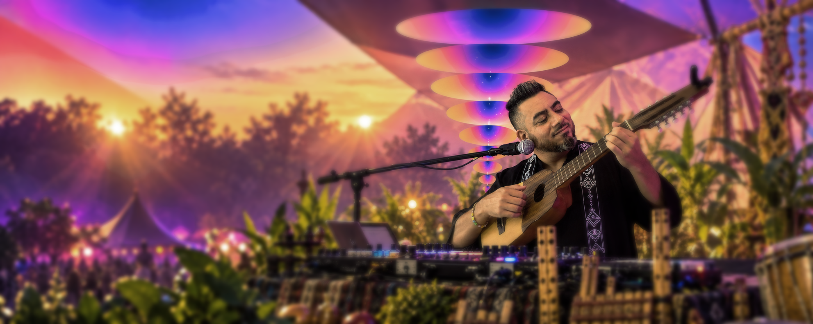
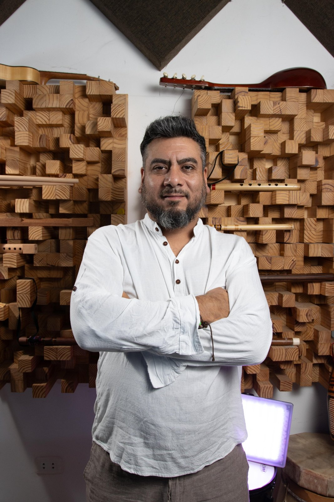
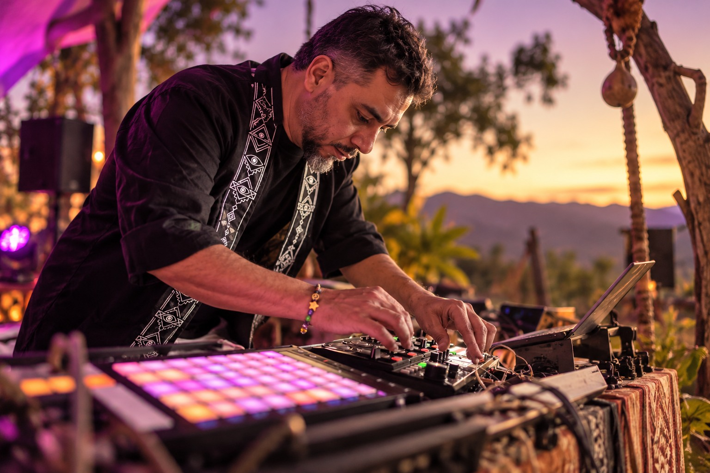
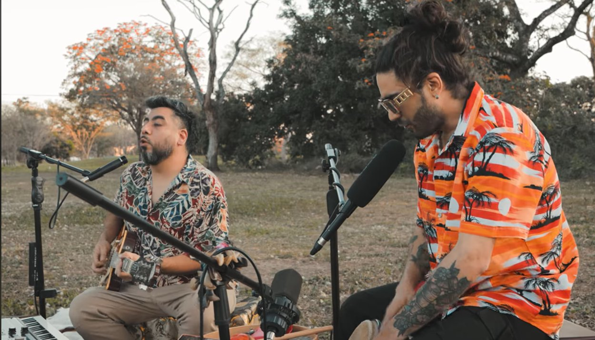
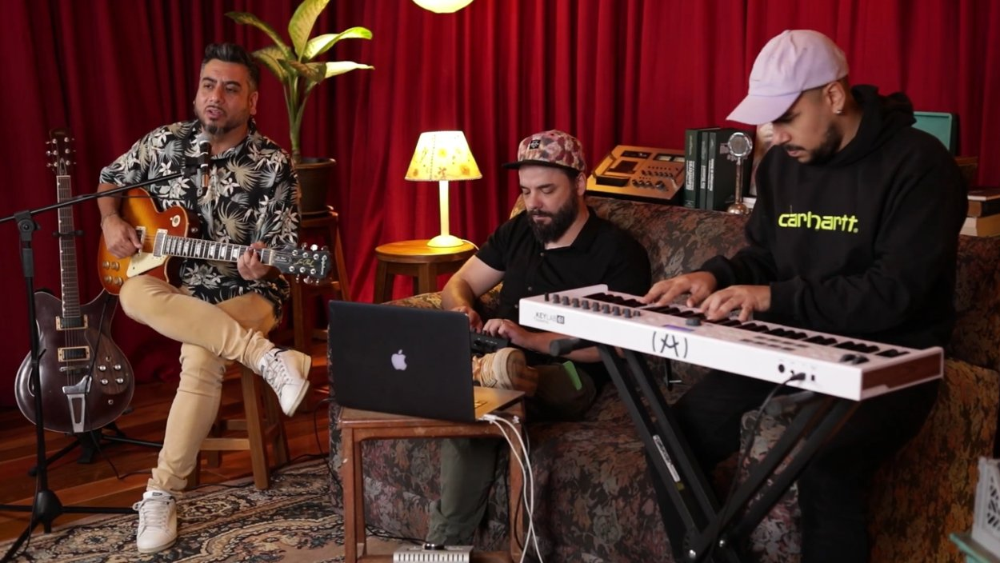
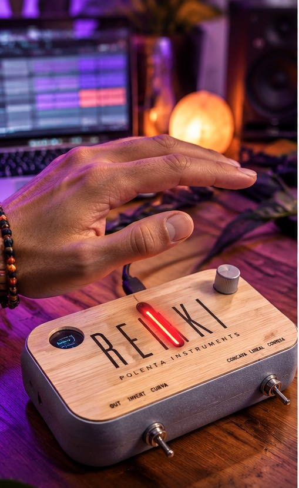
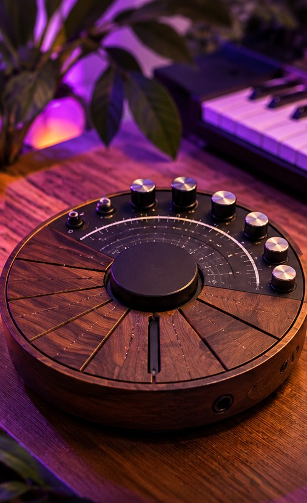
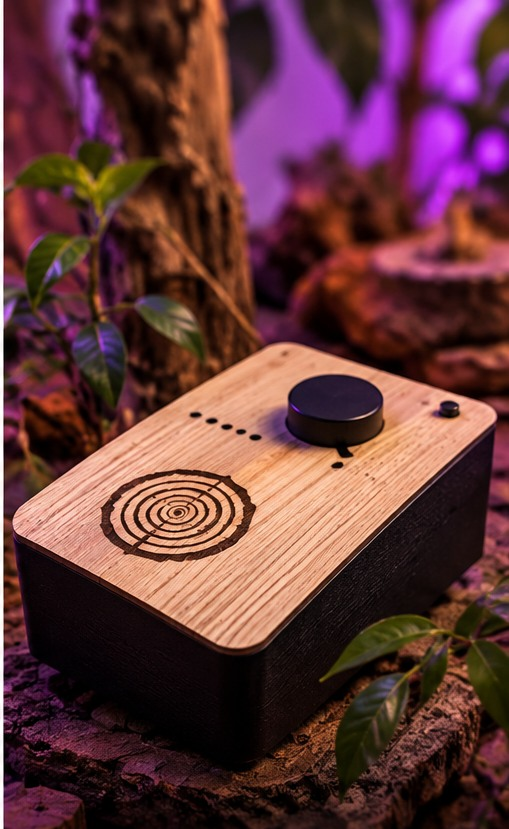

SOLO
Instrumentos en vivo, electrónica y capas creadas en tiempo real. Un viaje íntimo y expansivo.
Live instruments, electronics and layers built in real time. An intimate, expansive journey.
CONSULTAR →INQUIRE →
Un viaje sonoro que integra instrumentos ancestrales, electrónica y loops creados en vivo.A sonic journey combining ancestral instruments, electronics and loops created live.
▶ VER LIVE SESSIONWATCH LIVE SESSION
AMASHA es el proyecto solista de Federico Amaya, músico y productor nacido en Jujuy, criado en Salta y radicado en Bolivia.
AMASHA is the solo project of Federico Amaya, a musician and producer born in Jujuy, raised in Salta and based in Bolivia.
Fusiona instrumentos andinos, texturas electrónicas y live looping para construir canciones y paisajes sonoros frente al público.
He combines Andean instruments, electronic textures and live looping to build songs and soundscapes in front of the audience.
CONTACTAR →GET IN TOUCH →Una selección de canciones y exploraciones musicales de AMASHA. Escuchalas acá mismo, sin salir de la página.
A selection of AMASHA's songs and musical explorations. Listen right here without leaving the page.
SPOTIFY ↗
Instrumentos en vivo, electrónica y capas creadas en tiempo real. Un viaje íntimo y expansivo.
Live instruments, electronics and layers built in real time. An intimate, expansive journey.
CONSULTAR →INQUIRE →
Un encuentro de instrumentos, ritmo y exploración musical en vivo.
A meeting of instruments, rhythm and live musical exploration.
CONSULTAR →INQUIRE →
Un formato de mayor riqueza instrumental y posibilidades para distintos escenarios.
A richer instrumental format for a variety of stages.
CONSULTAR →INQUIRE →
Un controlador que convierte la distancia de la mano en expresión musical.
A controller that turns hand distance into musical expression.

Exploración de nuevas interfaces para acordes y expresión musical.
Exploring new interfaces for chords and musical expression.

Sensores convierten pequeñas variaciones eléctricas de los árboles en notas musicales.
Sensors transform subtle electrical changes in trees into musical notes.
Festivales, espacios culturales, eventos y colaboraciones.Festivals, cultural venues, events and collaborations.